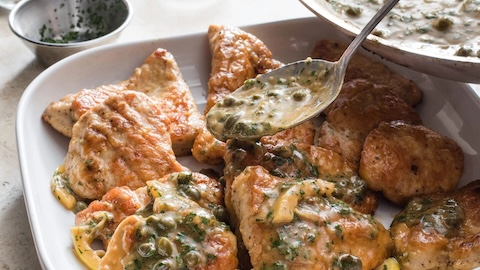

Chicken Picatta
Jump To Recipe
Background
Chicken Piccata is a classic Italian-American dish that marries simplicity with rich flavors, making it a beloved favorite in many households.
Originating from Italy, "piccata" refers to meat, usually veal or chicken, that is sliced, dredged in flour, browned, and then served in a sauce.
In the case of Chicken Piccata, tender chicken breasts are the star, enhanced by a tangy and savory lemon-butter sauce with capers. This particular
Recipe hails from America's Test Kitchen, being relatively easy to prepare, and ensured to have good taste.
Recipe
Prep Time: ~30mins
Serves ~6-8
Ingredients
- 4 6-8ox Chicken breasts
- Kosher Salt and Pepper
- 2 Large Lemons
- 3/4 Cup AP Flour
- 1/4 Cup + 1 Tsp of Vegetable Oil
- 1: Shallot (Minced), Garlic Clove
Cup Chicken Broth
- 3 Tbsp unsalted butter, divided into 6 peices
- 2 Tbsp Capers, Drained
- 1 Tbsp Fresh Minced Parsley
Directions
- Cut each chicken breast in half crosswise, then cut thick half in half again horizontally, repeating 3 times. Place cutlets between sheets of plastic wrap and gently
pound to even ½-inch thickness. Toss with 2 teaspoons salt and ½ teaspoon pepper. Set aside for 15 minutes.
- Halve 1 lemon lengthwise. Trim ends from 1 half, halve lengthwise again, then cut crosswise ¼-inch-thick slices; set aside.
Juice remaining parts and set aside 3 tablespoons juice.
- Spread flour in shallow dish. Working with 1 cutlet at a time, dredge cutlets in flour, shaking gently to remove excess. Place on wire rack set in rimmed baking sheet.
- Heat 2 tablespoons oil in 12-inch skillet over medium-high heat until smoking. Place 6 cutlets in skillet, reduce heat to medium, and cook until golden brown on 1 side, 2 to 3 minutes.
Flip and cook until golden brown on second side, 2 to 3 minutes. Return cutlets to wire rack. Repeat with 2 tablespoons oil and remaining 6 cutlets.
- Add remaining 1 teaspoon oil and shallot to skillet and cook until softened, 1 minute. Add garlic and cook until fragrant, ~30 seconds.
- Add broth, reserved lemon juice, and reserved lemon slices and bring to simmer, scraping up any browned bits.
- Add cutlets to sauce and simmer for 4 minutes, flipping halfway through simmering. Transfer cutlets to platter.
Sauce should be thickened to consistency of heavy cream; if not, simmer 1 minute longer. Off heat, whisk in butter.
Stir in capers and parsley. Season with salt and pepper to taste. Spoon sauce over chicken and serve.
Back to Homepage